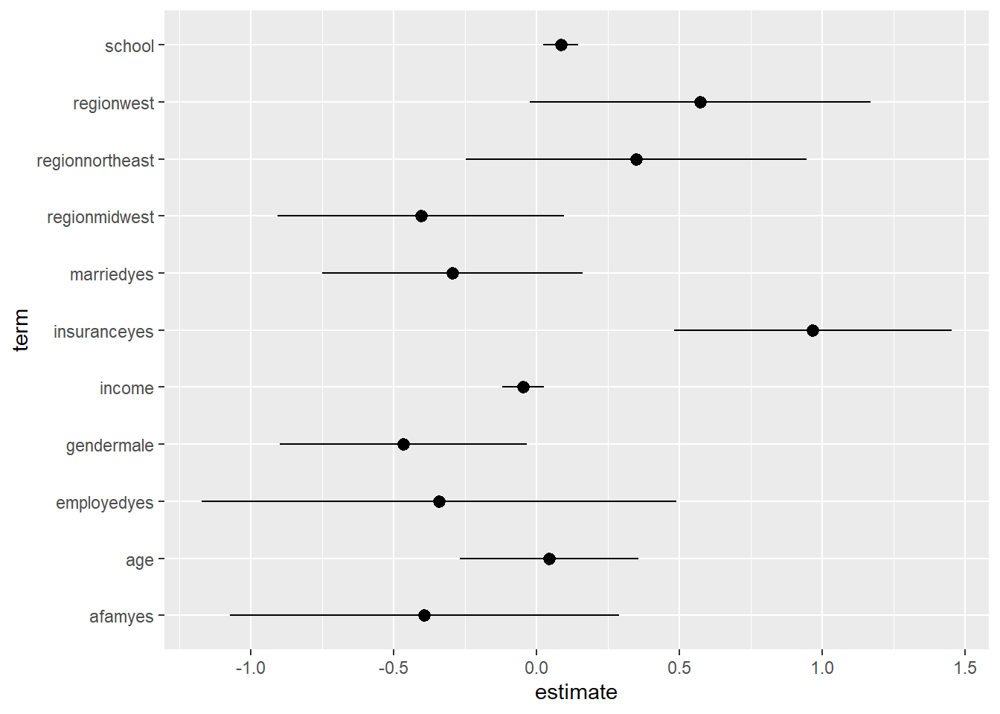
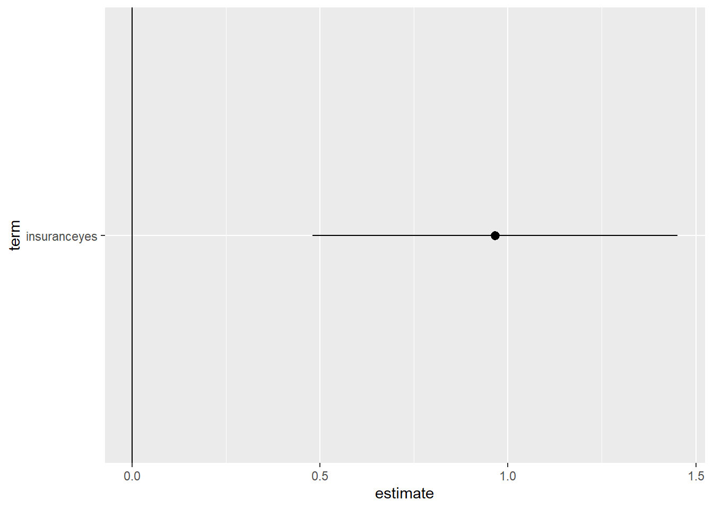

Chapter 6 パラメータの推定
（条件付き）平均差を推定する。
点推定だけでなく、信頼区間も推定する。
6.1 データ
data("NMES1988",
package = "AER")
raw <- NMES19886.2 部分線形モデルに基づく推定
- 部分線形モデルに関心のあるパラメータを埋め込む
\[E[Y|D=d,X=x]=\underbrace{\tau(x)}_{Interest}\times d+\underbrace{f(x)}_{Nuisance}\]
6.2.1 OLS by lm_robust (estimatr)
- robust standard errorを計算するためにestimatrパッケージ(Blair et al. 2021)を利用
library(estimatr)\(\tau(x)=\tau,f(x)=\beta_0+\beta_1x_1+...+\beta_Lx_L\)と特定化
サンプル内MSEを最大化するように推定
lm_robust(visits ~ medicaid + age + gender + school + income + employed + region + afam + married,
data = raw)## Estimate Std. Error t value Pr(>|t|) CI Lower
## (Intercept) 4.43322285 1.28909706 3.4390140 5.892654e-04 1.90594289
## medicaidyes 1.47951835 0.37804467 3.9136072 9.230346e-05 0.73836025
## age 0.02394287 0.15936751 0.1502368 8.805847e-01 -0.28849777
## gendermale -0.41995637 0.22090543 -1.9010686 5.735839e-02 -0.85304235
## school 0.13489900 0.03135497 4.3023168 1.726949e-05 0.07342746
## income -0.03583914 0.03658309 -0.9796640 3.273060e-01 -0.10756044
## employedyes -0.26397560 0.42442589 -0.6219592 5.340009e-01 -1.09606426
## regionnortheast 0.40673254 0.30505181 1.3333228 1.824950e-01 -0.19132276
## regionmidwest -0.25381796 0.25626543 -0.9904495 3.220090e-01 -0.75622737
## regionwest 0.46017572 0.30367944 1.5153338 1.297598e-01 -0.13518905
## afamyes -0.90212815 0.33000959 -2.7336422 6.288896e-03 -1.54911328
## marriedyes -0.11025545 0.23160143 -0.4760569 6.340575e-01 -0.56431099
## CI Upper DF
## (Intercept) 6.96050281 4394
## medicaidyes 2.22067644 4394
## age 0.33638350 4394
## gendermale 0.01312960 4394
## school 0.19637054 4394
## income 0.03588216 4394
## employedyes 0.56811305 4394
## regionnortheast 1.00478783 4394
## regionmidwest 0.24859145 4394
## regionwest 1.05554048 4394
## afamyes -0.25514302 4394
## marriedyes 0.34380009 4394発展:推計結果表
tidy関数により推定結果data.frameに変化することで、kable関数(knitrパッケージ)による推計結果表の整形、geom_pointrange関数による可視化が可能
点推定値(estimate)、標準誤差(std.error)のみを残した推計結果表
library(knitr)
library(tidyverse)
fit <-
lm_robust(visits ~ medicaid + age + gender + school + income + employed + region + afam + married,
data = raw)
fit <- tidy(fit)
fit <- select(fit, term, estimate, std.error)
kable(fit, digits = 2)| term | estimate | std.error |
|---|---|---|
| (Intercept) | 4.43 | 1.29 |
| medicaidyes | 1.48 | 0.38 |
| age | 0.02 | 0.16 |
| gendermale | -0.42 | 0.22 |
| school | 0.13 | 0.03 |
| income | -0.04 | 0.04 |
| employedyes | -0.26 | 0.42 |
| regionnortheast | 0.41 | 0.31 |
| regionmidwest | -0.25 | 0.26 |
| regionwest | 0.46 | 0.30 |
| afamyes | -0.90 | 0.33 |
| marriedyes | -0.11 | 0.23 |
fit <- filter(fit,
term == "medicaidyes")
kable(fit, digits = 2)| term | estimate | std.error |
|---|---|---|
| medicaidyes | 1.48 | 0.38 |
発展:Dot-and-Whisker plotによる可視化
- Dot-and-Whisker図により点推定量と信頼区間を可視化
fit <-
lm_robust(visits ~ medicaid + age + gender + school + income + employed + region + afam + married,
data = raw)
fit <- tidy(fit)
fit <- filter(fit,
term != "(Intercept)")
ggplot(fit, aes(y = term,
x = estimate,
xmin = conf.low,
xmax = conf.high)) +
geom_pointrange()
fit <- filter(fit,
term == "medicaidyes")
ggplot(fit, aes(y = term,
x = estimate,
xmin = conf.low,
xmax = conf.high)) +
geom_pointrange() +
geom_vline(xintercept = 0)
6.2.2 Double selection
2重選択法(Belloni, Chernozhukov, and Hansen 2014)を紹介
hdmパッケージ(Spindler, Chernozhukov, and Hansen 2019)を利用
library(hdm)
Y <- raw$visits
D <- if_else(raw$medicaid == "yes", 1, 0)
X <- model.matrix(~ - 1+ age + gender + school + income + employed + region + afam + married,
raw)
fit <-
rlassoEffect(x = X,
y = Y,
d = D,
method = "double selection")- 推定結果
summary(fit)## [1] "Estimates and significance testing of the effect of target variables"
## Estimate. Std. Error t value Pr(>|t|)
## d1 1.4694 0.3767 3.901 9.6e-05 ***
## ---
## Signif. codes: 0 '***' 0.001 '**' 0.01 '*' 0.05 '.' 0.1 ' ' 1- 選択されたコントロール変数
fit$selection.index## age genderfemale gendermale school income
## FALSE TRUE FALSE TRUE TRUE
## employedyes regionnortheast regionmidwest regionwest afamyes
## TRUE FALSE TRUE TRUE TRUE
## marriedyes
## TRUE6.2.3 Double Machine Learning
Double Machine Learning法(Chernozhukov et al. 2018)を紹介
DoubleMLパッケージ(Bach et al. 2021)を利用
6.2.4 Causal Forest
Causal Forest法Athey et al. (2019)を紹介
grfパッケージ(Tibshirani, Athey, and Wager 2020)を利用